Appendix 2 – SPECFEM3D_GLOBE’s Flags¶
The input parameters for the code of SPECFEM3D_GLOBE are briefly described below. For a detailed description please consult the SPECFEM3D_GLOBE manual.
A2.1 Group 0 - Basic¶
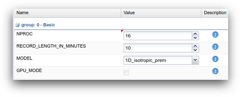
Figure A2.1: Parameter form for ‘Group 0 - Basic’.
NPROC is the number of processors that the simulation will run on. This is essentially dependent upon the high-performance computer and workflow you intend to submit your job to.
RECORD_LENGTH_IN_MINUTES is the time in minutes you want to run the simulation for.
MODEL is the velocity model to be used in the simulation. There is a range of models pre-loaded into the solver SPECFEM3D_GLOBE. (See the code’s manual for all the available options).
GPU_MODE allows SPECFEM to be run on high performance computers that use graphical processing units (GPUs) rather than the more conventional CPU (central processing unit). All the workflows currently available on the VERCE platform use CPUs, so you should always leave this box unchecked.
A2.2 Group 1 – Inverse Problem¶
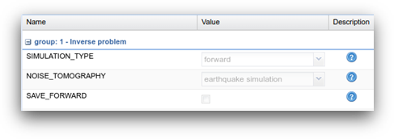
Figure A2.2: Parameter form for ‘Group 1 – Inverse Problem’.
SIMULATION_TYPE is set to ‘forward’ by default to model the wave-field from an earthquake.
NOISE_TOMOGRAPHY is set to ‘earthquake simulation’ by default as the noise tomography applications of SPECFEM are not currently supported within the VERCE platform.
SAVE_FORWARD is selected if the last step of the wave-field is to be saved. This enables to back reconstruct the seismic wave-field, but requires a large amount of storage space and it is not yet supported by the VERCE platform.
A2.3 Group 2 – Simulation Area¶
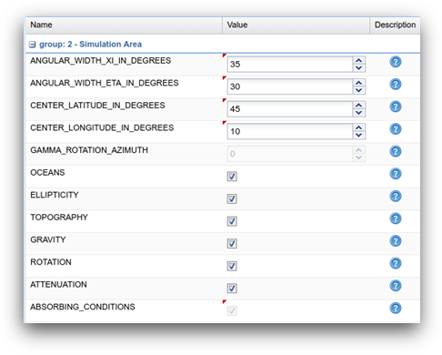
Figure A2.3: Parameter form for ‘Group 2 – Simulation Area’.
ANGULAR_WIDTH_XI_IN_DEGREES is the width of one side of the chunk in degrees.
ANGULAR_WIDTH_ETA_IN_DEGREES is the width of the second side of the chunk in degrees.
CENTER_LATITUDE_IN_DEGREES is the latitude of centre of the chunk in degrees.
CENTER_LONGITUDE_IN_DEGREES is the longitude of centre of the chunk in degrees.
GAMMA_ROTATION_AZIMUTH defines the rotation angle of the chunk about its centre measured counter clockwise from due North in degrees.
OCEANS can be selected if the effect of the oceans on seismic wave propagation should be incorporated based upon the approximate treatment discussed in Komatitsch and Tromp (2002).
ELLIPTICITY can be selected if the mesh should make the Earth model elliptical in shape according to Clairaut’s equation.
TOPOGRAPHY can be selected if topography and bathymetry should be incorporated based upon model ETOPO4.
GRAVITY can be selected if self-gravitation should be incorporated in the Cowling approximation.
ROTATION can be selected if the Coriolis effect should be incorporated. Turning this feature on is relatively cheap numerically.
ATTENUATION can be selected if attenuation should be incorporated.
ABSORBING_CONDITIONS is selected only for regional simulations.
A2.4 Group 3 – Mesh Parameters¶
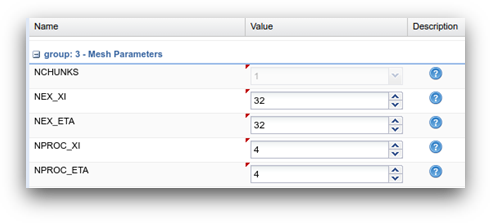
Figure A2.4: Parameter form for ‘Group 3 – Mesh Parameters’.
NCHUNKS is the number of chunks.
NEX_XI is the number of elements at the surface along the xi side of a chunk.
NEX_ETA is the number of elements at the surface along the eta side of a chunk.
NPROC_XI is the number of MPI processors along the xi side of a chunk.
NPROC_ETA is the number of MPI processors along the eta side of a chunk.
A2.5 Group 4 – Adjoint Kernel Options¶
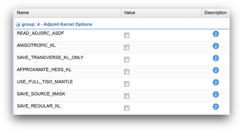
Figure A2.5: Parameter form for ‘Group 4 – Adjoint Kernel Options’.
READ_ADJSRC_ASDF can be selected to use ASDF format for reading the adjoint sources.
ANISOTROPIC_KL can be used to compute anisotropic kernels in crust and mantle.
SAVE_TRANSVERSE_KL_ONLY can be used to output only transverse isotropic kernels rather than fully anisotropic kernels when ANISOTROPIC_KL above is selected.
APPROXIMATE_HESS_KL can be used to output approximate Hessian in crust mantle region.
USE_FULL_TISO_MANTLE can be used to force transverse isotropy for all mantle elements.
SAVE_SOURCE_MASK can be used to output kernel mask to zero out source region to remove large values near the sources in the sensitivity kernels.
SAVE_REGULAR_KL can be used to output kernels on a regular grid instead of on the GLL mesh points.
A2.6 Group 5 - Movie¶
| 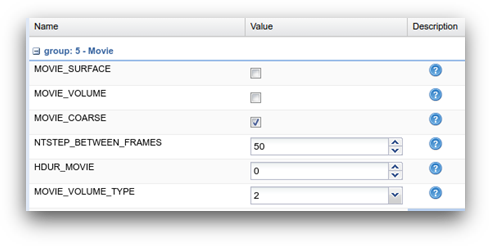 | 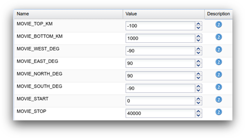 |
Figure A2.6: Parameter form for ‘Group 5 - Movie’.
MOVIE_SURFACE creates a movie of seismic wave propagation on the Earth’s surface.
MOVIE_VOLUME creates a movie of seismic wave propagation in the Earth’s interior.
MOVIE_COARSE saves movie only at corners of elements.
NTSTEP_BETWEEN_FRAMES determines the number of timesteps between two movie frames.
HDUR_MOVIE determines the half duration of the source time function for the movie simulations.
MOVIE_VOLUME_TYPE allows you to select movie volume type option where 1=strain, 2=time integral of strain, 3=µ*time integral of strain, 4= saves the trace and deviatoric stress in the whole volume, 5=displacement, 6=velocity.
MOVIE_TOP_KM/MOVIE_BOTTOM_KM defines depth below the surface in kilometres.
MOVIE_WEST_DEG refers to longitude, degrees West.
MOVIE_EAST_DEG refers to longitude, degrees East.
MOVIE_NORTH_DEG refers to latitude, degrees North.
MOVIE_SOUTH_DEG refers to latitude, degrees South.
MOVIE_START denotes movie start time.
MOVIE_STOP denotes movie end time.
A2.7 Group 6 - Sources¶
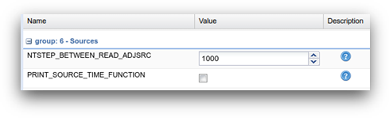
Figure A2.7: Parameter form for ‘Group 6 - Sources’.
NTSTEP_BETWEEN_READ_ADJSRC refers to the number of adjoint sources read in each time for an adjoint simulation.
PRINT_SOURCE_TIME_FUNCTION prints information about the source time function in the file OUTPUT_FILES/plot_source_time_function.txt.
A2.8 Group 7 - Seismograms¶
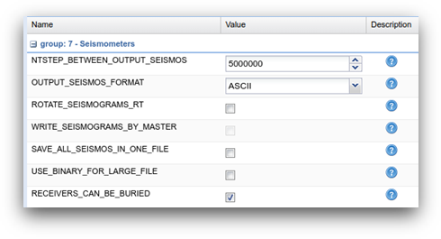
Figure A2.8: Parameter form for ‘Group 7 - Seismograms’.
NTSTEP_BETWEEN_OUTPUT_SEISMOS specifies the interval at which synthetic seismograms are written in the LOCAL_PATH directory.
OUTPUT_SEISMOS_FORMAT allows you to select the output format for the seismograms such as ASCII, SAC_ALPHANUM, SAC_BINARY and ASDF.
ROTATE_SEISMOGRAMS_RT can be selected to have radial (R) and transverse (T) horizontal components of the synthetic seismograms.
WRITE_SEISMOGRAMS_BY_MASTER can be selected to have all the seismograms written by the master.
SAVE_ALL_SEISMOS_IN_ONE_FILE saves all seismograms in one large combined file instead of one file per seismogram.
USE_BINARY_FOR_LARGE_FILE can be selected to use binary instead of ASCII for that large file.
RECEIVERS_CAN_BE_BURIED can be used to accommodate stations with instruments that are buried, i.e., the solver will calculate seismograms at the burial depth specified in the STATIONS file.
A2.9 Group 8 - Advanced¶
| 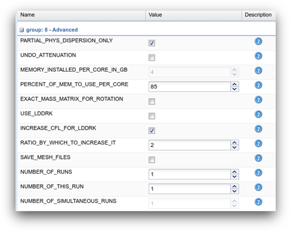 | 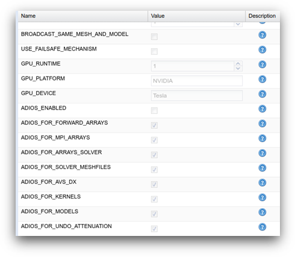 |
Figure A2.8: Parameter form for ‘Group 8 - Advanced’.
PARTIAL_PHYS_DISPERSION_ONLY or UNDO_ATTENUATION can be used to undo attenuation for sensitivity kernel calculations or forward runs with SAVE_FORWARD
MEMORY_INSTALLED_PER_CORE_IN_GB is used to set the amount of memory installed per core in Gigabyte.
PERCENT_OF_MEM_TO_USE_PER_CORE can be used to set percentage of memory to use per core for arrays to undo attenuation, keeping in mind that you need to leave some memory available for the GNU/Linux system to run.
EXACT_MASS_MATRIX_FOR_ROTATION can be selected if you are interested in precise effects related to rotation.
USE_LDDRK can be used for LDDRK high-order time scheme instead of Newmark.
INCREASE_CFL_FOR_LDDRK can be used to increase CFL for LDDRK.
RATIO_BY_WHICH_TO_INCREASE_IT determines the ratio by which to increase CFL.
SAVE_MESH_FILES can be used to save AVS, OpenDX, or ParaView mesh files for subsequent viewing.
NUMBER_OF_RUNS refers to the number of stages in which the simulation will be completed, e.g. 1 corresponds to a run without restart files.
NUMBER_OF_THIS_RUN can be used if you choose to perform the run in stages in which you need to tell the solver what stage run to perform.
NUMBER_OF_SIMULTANEOUS_RUNS adds the ability to run several calculations (several earthquakes) in an embarrassingly-parallel fashion from within the same run.
BROADCAST_SAME_MESH_AND_MODEL allows to read the mesh and model files from a single run in the beginning and broadcast them to all the others (if the mesh and the model are the same for all simultaneous runs).
USE_FAILSAFE_MECHANISM can be used to terminate all the runs or let the others finish using a fail-safe mechanism if one or a few of simultaneous runs fail.
GPU_RUNTIME can only be used if GPU_MODE is selected.
GPU_PLATFORM filters on the platform in OpenCL.
GPU_DEVICE filters on the device name in OpenCL.
ADIOS_ENABLED and all the other ADIOS flags enable the use of ADIOS library for I/Os.